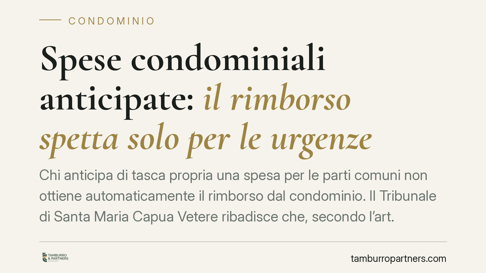

Spese condominiali anticipate: il rimborso spetta solo per le urgenze
Chi anticipa di tasca propria una spesa per le parti comuni non ottiene automaticamente il rimborso dal condominio. Il Tribunale di Santa Maria Capua Vetere ribadisce che, secondo l'art. 1134 del Codice civile, il diritto al rimborso scatta soltanto se l'intervento era urgente e indifferibile. Un principio che incide su una pratica tanto diffusa quanto rischiosa.

Il caso
Un condomino esegue un lavoro sulle parti comuni dell'edificio senza attendere la delibera dell'assemblea né l'autorizzazione dell'amministratore. Poi chiede al condominio di rimborsargli quanto speso. Una vicenda ricorrente, che il Tribunale di Santa Maria Capua Vetere, quarta sezione civile, ha affrontato con una pronuncia del 19 maggio 2025.
La risposta dei giudici è netta: il rimborso non è automatico. Il condomino che agisce di propria iniziativa ha diritto a recuperare le somme solo in presenza di un presupposto preciso, l'urgenza dell'intervento.
Inquadramento normativo
La norma di riferimento è l'articolo 1134 del Codice civile, che disciplina la gestione delle parti comuni da parte del singolo condomino. Il testo prevede che chi assume la gestione di un bene comune senza autorizzazione dell'amministratore o dell'assemblea ha diritto al rimborso "solo se si tratta di spese urgenti".
Il concetto di urgenza non è lasciato al libero apprezzamento di chi spende. Per "spesa urgente" si intende un intervento che, se non eseguito immediatamente, provocherebbe un danno alle parti comuni o a terzi. Si pensi alla riparazione di una tubazione che allaga i piani sottostanti o al consolidamento di un elemento strutturale pericolante. L'urgenza, in altri termini, deve essere tale da non consentire il tempo necessario per convocare l'assemblea o interpellare l'amministratore.
La pronuncia del Tribunale campano si colloca nel solco di un orientamento consolidato della giurisprudenza di legittimità. Il messaggio è chiaro: la regola generale resta la decisione collettiva: l'iniziativa individuale è l'eccezione, ammessa solo quando il tempo manca davvero.
Implicazioni pratiche
Per il condomino la conseguenza è concreta. Chi anticipa una spesa convinto di fare cosa utile, ma senza che ricorra l'urgenza, rischia di sostenere il costo per intero. Il condominio può legittimamente rifiutare il rimborso, e il giudice difficilmente lo condannerà a pagare in assenza del presupposto previsto dalla legge.
Non basta quindi che il lavoro fosse necessario o opportuno. Un intervento può essere utile e perfino indispensabile nel medio periodo, ma restare privo del carattere dell'urgenza che giustifica l'azione autonoma. La differenza tra "necessario" e "urgente" è decisiva e ricade sul portafoglio di chi ha speso.
Sul piano probatorio, l'onere grava sul condomino. È lui che deve dimostrare, in giudizio, che l'intervento non poteva attendere la delibera assembleare. Documentazione fotografica, relazioni tecniche e tempistiche sono elementi che fanno la differenza.
L'amministratore, dal canto suo, ha interesse a che ogni spesa passi attraverso i canali ordinari. Autorizzare o rimettere all'assemblea le decisioni sulle parti comuni non è solo una formalità: è lo strumento che tutela il condominio da esborsi non deliberati.
Cosa fare in concreto
- Verificate l'urgenza prima di agire. Chiedetevi se il danno si aggraverebbe nel tempo necessario a convocare l'assemblea. Se la risposta è no, non siete in presenza di una spesa urgente ai sensi dell'art. 1134 c.c.
- Interpellate sempre l'amministratore. Anche in caso di urgenza, una comunicazione tempestiva, pur se successiva all'intervento, rafforza la vostra posizione.
- Documentate tutto. Fotografate lo stato dei luoghi, conservate fatture e, quando possibile, acquisite una relazione tecnica che attesti il carattere indifferibile del lavoro.
- Non confondete necessità e urgenza. Un intervento utile ma rinviabile va portato in assemblea, non eseguito d'iniziativa.
- Valutate un parere preventivo nei casi dubbi. Chiarire i presupposti prima di spendere evita contenziosi e costi non recuperabili.
La logica dell'art. 1134 c.c. premia la prudenza. Il condomino che rispetta le procedure si tutela, quello che le scavalca si assume un rischio economico che la legge non copre, salvo che l'urgenza sia reale e dimostrabile.
---
*Contributo informativo a cura di Tamburro & Partners - Avv. Giuseppe Tamburro. Non costituisce parere legale.*
Ogni condominio ha una storia a sé.
Se gestisci un'amministrazione e vuoi un confronto su una specifica questione condominiale, scrivi allo studio. Ti rispondiamo entro un giorno lavorativo.